Enterprise-grade accounting intelligence for Odoo Community. Multi-period comparisons, vertical common-size analysis, dynamic groupings, and board-ready PDF/XLSX exports.
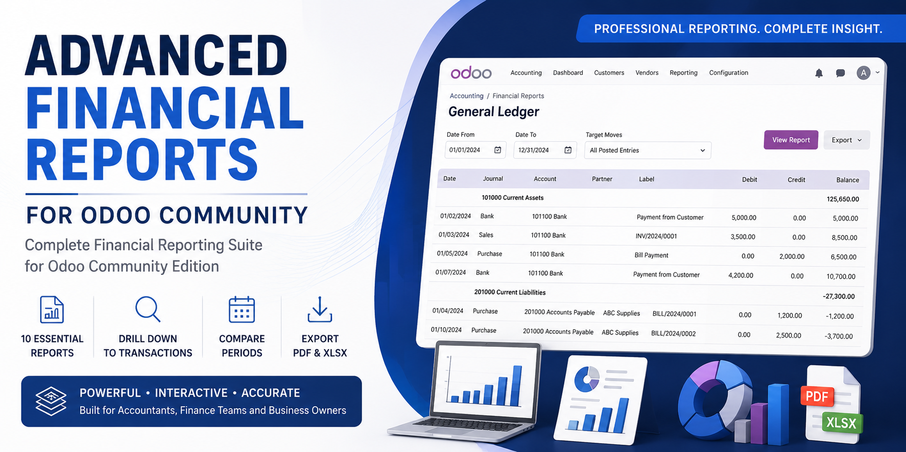
Built from the ground up for modern OWL 3 architecture with fast query batching and zero enterprise dependencies.
Switch between Balance Sheet, P&L, and Cash Flow in one tabbed view. Single-click export compiles all statements into a multi-sheet Excel file.
% of Total benchmarks every balance against Total Assets or Operating Revenue automatically across all sub-accounts.
Compare up to 4 consecutive quarters or years, or Same Period Last Year (YoY) with Amount (Δ) and Percentage (Δ%) variance pills.
Dynamically slice and aggregate accounts by Partner or Journal in real-time with high-speed batched queries.
Clean date selector popover with quick presets (This Month, Quarter, Year, Last Year) and sticky headers for comfortable scrolling.
Pre-flattened hierarchy indentation prevents PDF recursion errors, delivering crisp Wkhtmltopdf exports and formula-driven Excel files.
Audit your entire general ledger with ease. Trace account movements, monitor cumulative running balances, and inspect the specific journal entries behind any balance.
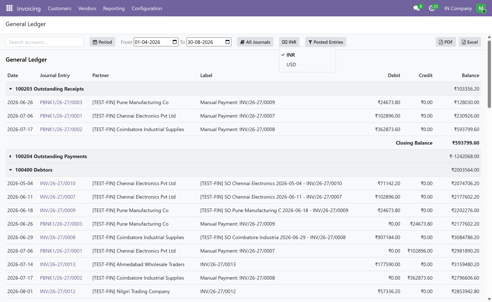
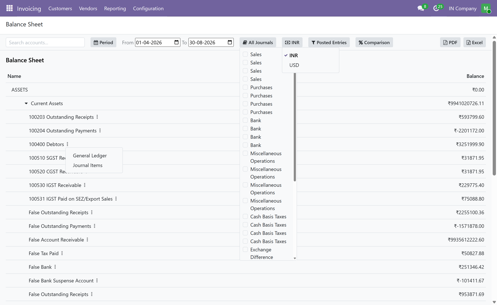
Clear, structured hierarchy of Assets, Liabilities, and Equity. Drill down from master categories into sub-categories down to atomic accounts.
Deep insights into operating income, cost of goods sold, operating expenses, and net profit. Identify cost trends and evaluate operational margins.
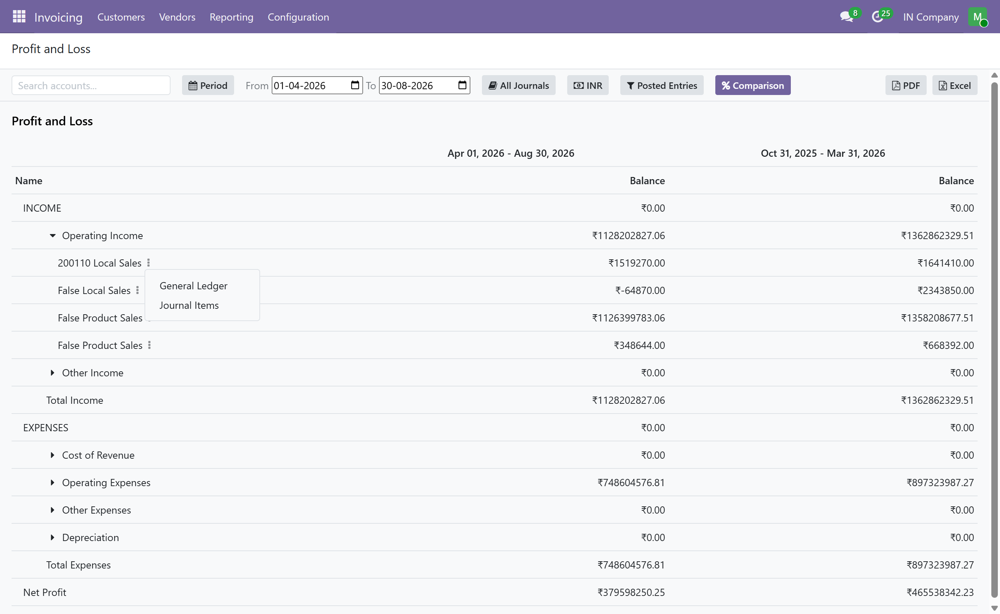
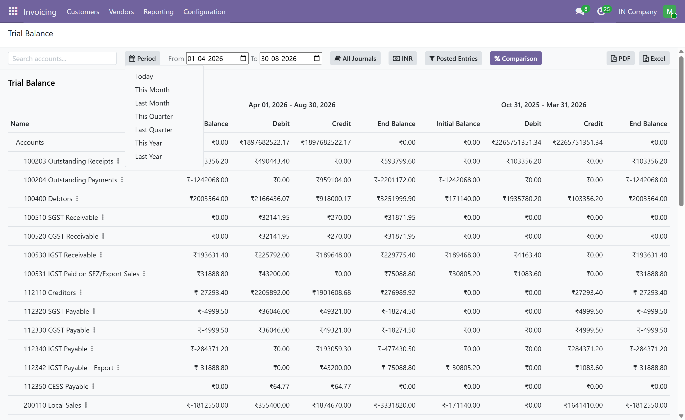
Side-by-side columns for 1 to 4 sequential or annual periods. Highlight growth and contraction with dynamic variance pills and SVG sparklines.
Every essential accounting report configured and ready out-of-the-box.
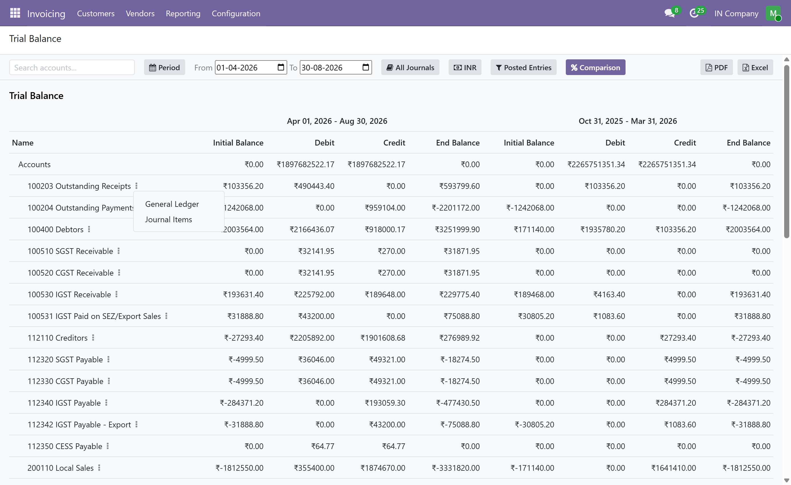
Initial, period debit/credit movements, and ending balance across every active account.
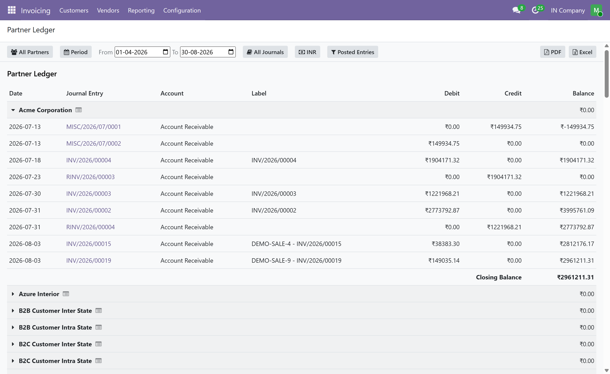
Customer and vendor sub-ledgers with matched payments and running balances.
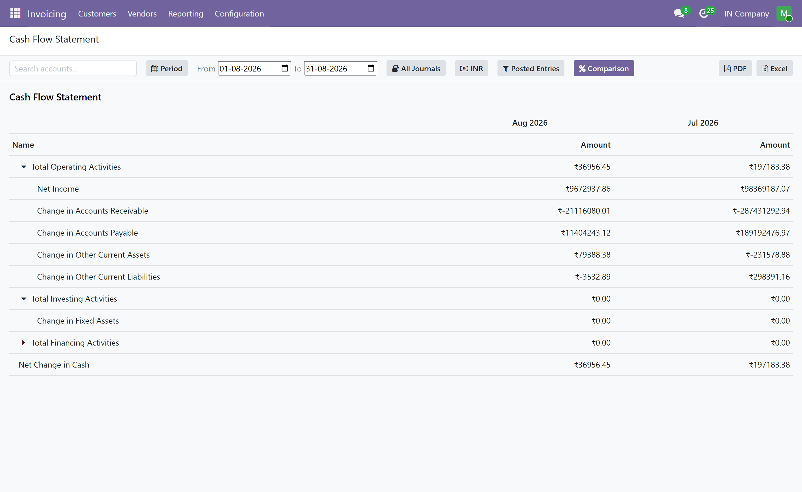
Direct accounting separated into Operating, Investing, and Financing cash activities.
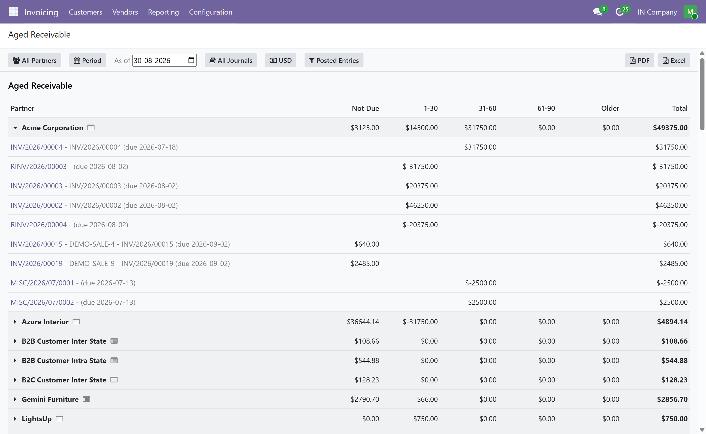
Outstanding customer receivables segmented into aging intervals (1-30, 31-60, 61-90, 90+ days).
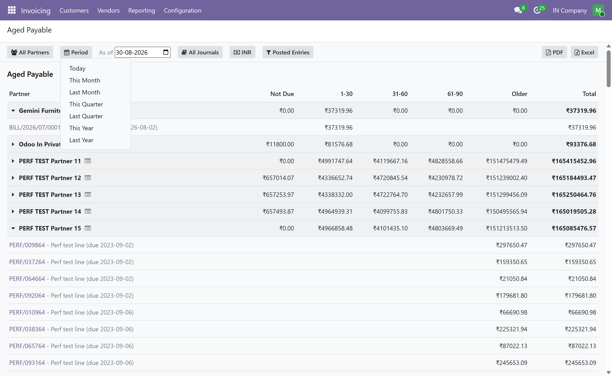
Supplier liabilities categorized by due date intervals to optimize cash outlays.
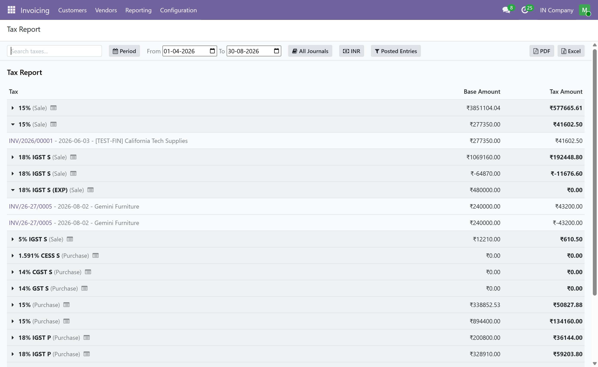
Aggregated sales tax and purchase tax balances, taxable bases, and net tax.
Export pixel-perfect financial packages for executive meetings, board reviews, and external auditing without manual re-formatting.
This module is an independent implementation built natively on Odoo Community Edition's account framework. It uses standard account.report, account.report.line, and account.report.expression models with zero external or proprietary dependencies.
Notice: This module does not depend on, include, or reuse proprietary source code from Odoo Enterprise's account_reports module. Licensed under LGPL-3.
Have questions, need customization, or want help setting up advanced financial reports in your Odoo environment?